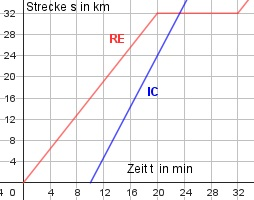

Lineare Funktionen Aufgabe 66 Ein Regionalexpess (RE) und ein Intercity (IC) fahren in die gleiche Richtung. Der RE fährt um 10 Uhr ab und bleibt nach 20 Minuten in einem 32 km entfernten Bahnhof stehen. Nach einem Aufenthalt von 10 Minuten fährt er mit der gleichen Geschwindigkeit weiter. Der IC fährt um 10.10 ab und hat nach 10 Minuten eine Strecke von 24 km zurückgelegt. a) Um welche Uhrzeit trifft der IC in der Haltestation ein? b) Bestimmen Sie die Funktionsgleichung (Strecke s abhängig von der Zeit t) für den IC. c) Wie viele Minuten später wäre der RE an der Haltestation angekommen, wenn beide gleichzeitig abgefahren wären?  a) 24 km vIC = -------- = 2,4 km/min 10 min 32 km t = ------------- = 13,3 min 2,4 km/min Der IC kommt um 10.10 + 13 = 10.23 Uhr an. b) m = 2,4 km/min Einen Punkt abgelesen: P1(10|0); 0 = 2,4 * 10 + b |-24 b = - 24 s = 2,4 * t - 24 c) t = 20 min - 13,3 min = 6,7 min später .